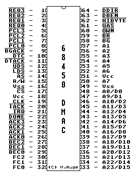
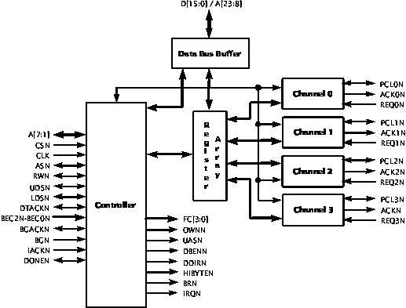

Previous
Next
TOC
68450 DMA Controller
Synthesizable Core
Function Description
The 68450 core complements the performance and architecture of the
M68000 family of microprocessors. The 68450 DMA controller core is
designed to move blocks of data in a quick and efficient manner.
The megafunction supports four independent DMA channels, and imple-
ments memory-to-memory, memory-to-device, and device-to-memory data
transfers.
Features
4 independent fully programmable channels
Memory-to-memory transfers
Array-chained and link-chained transfers
Memory-to-peripheral and peripheral-to-memory transfers
Programmable channel priorities
Two vectored interrupts per channel
Auto and external request modes
Polling and interrupt modes


Kapitel 68450 DMA Controller (ABAQ), Seite 1